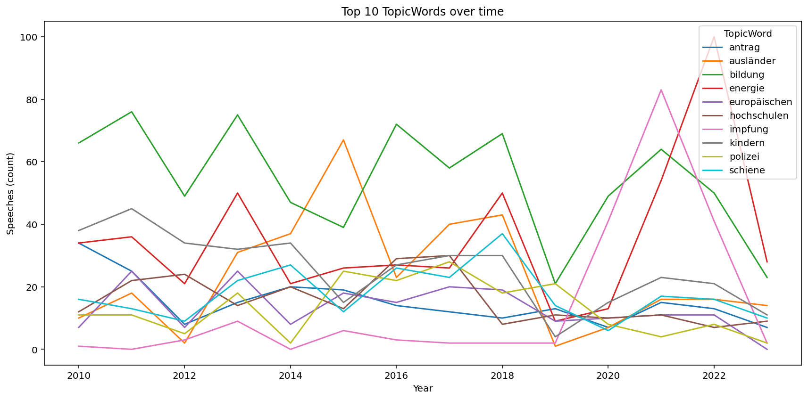
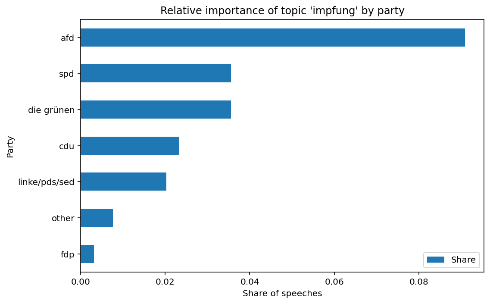
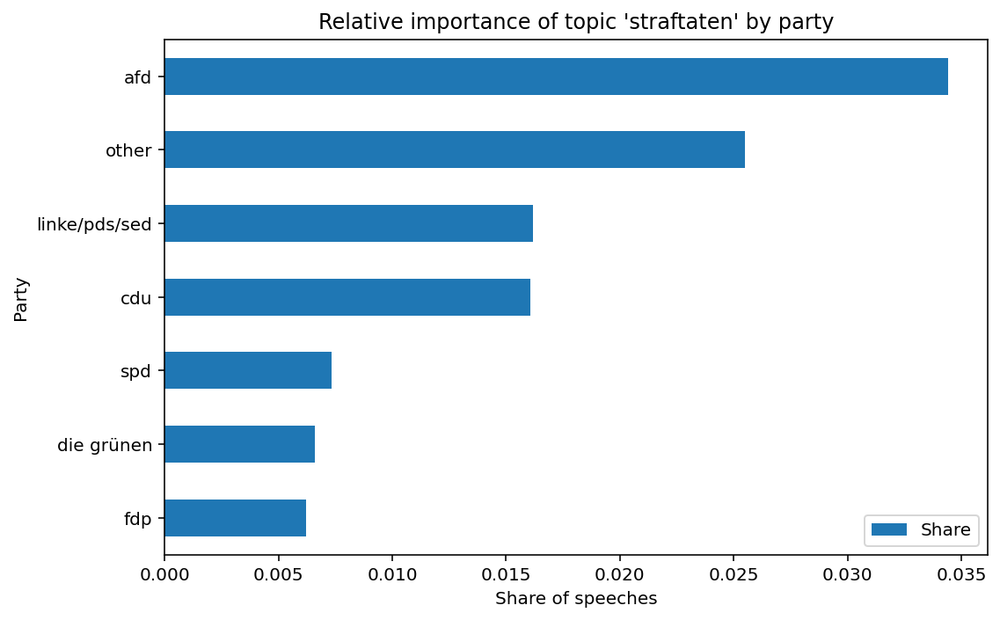
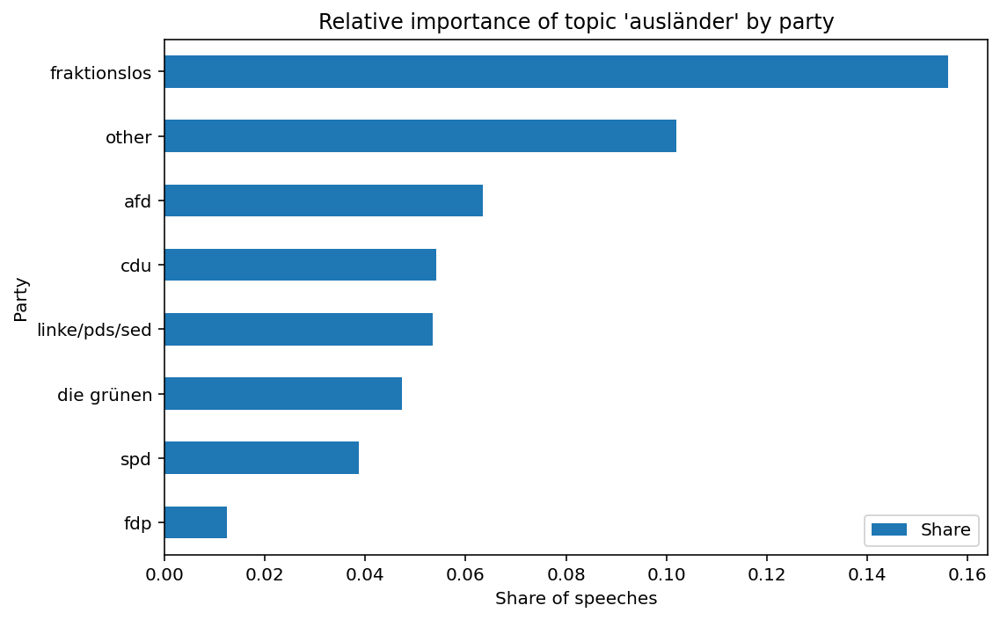
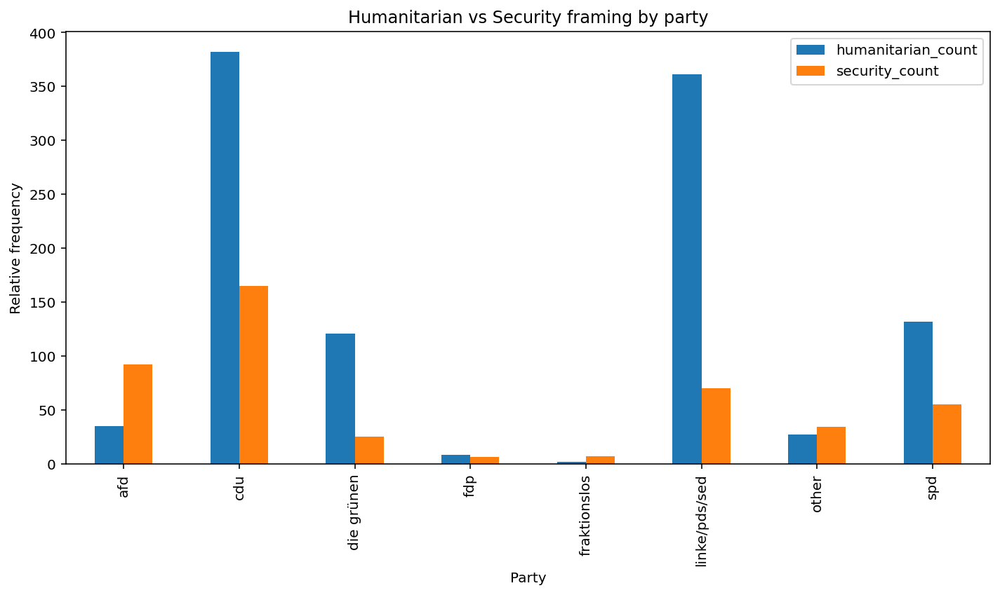

Digital Humanities
This project uses computational text analysis to trace how topics and framing in speeches at the Saxony parliament change over time.
By combining topic modeling with comparative metrics across parties, the analysis highlights which issues dominate parliamentary debates and how they are discussed. The figures below summarize key patterns from 1990 to 2023.

Topics Over Time
Top 10 most discussed topics in the Saxony parliament between 1990 and 2023.

Vaccines by Party
The share of speeches by party that was devoted to the topic vaccines.

Crime by Party
The share of speeches by party that was devoted to the topic crime.

Immigration by Party
The share of speeches by party that was devoted to the topic immigration.

Immigration Framing
Framing of speeches when the topic was immigration: count of instances of more humanitarian terms (integration, job perspectives, etc.) vs. security terms (crime, criminals, etc.).